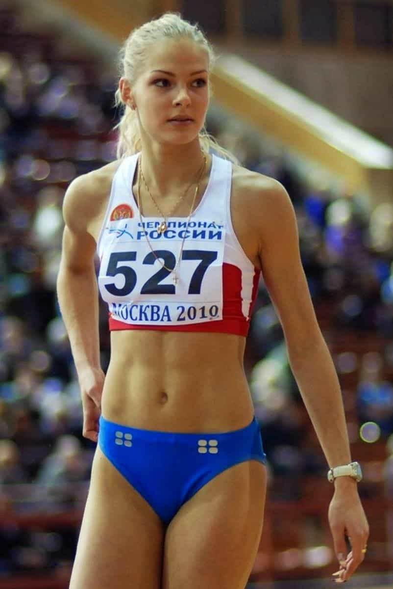
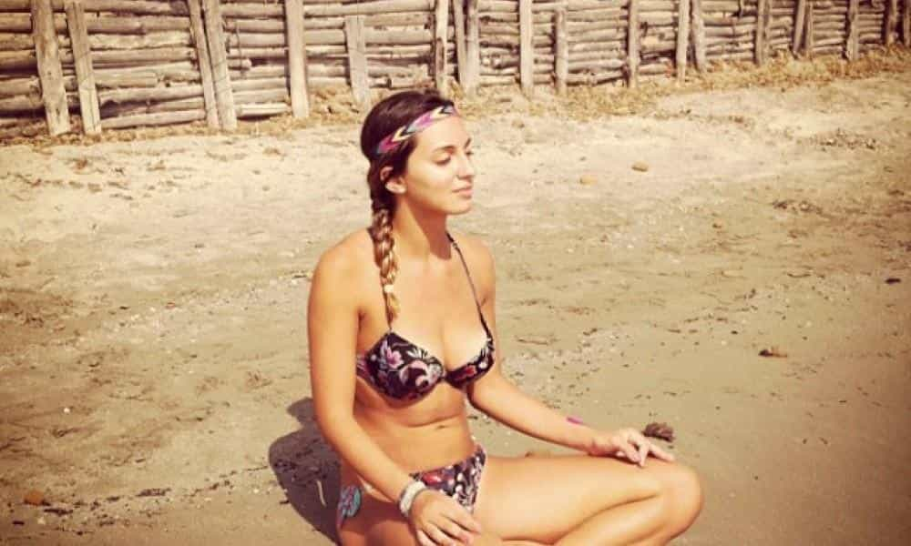
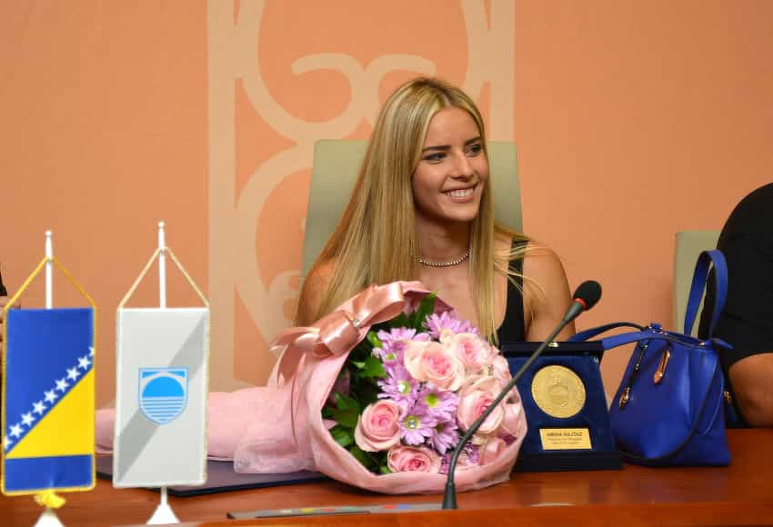
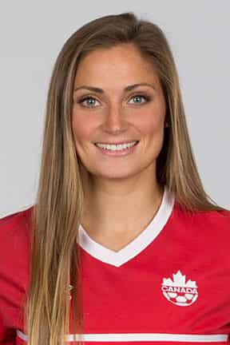
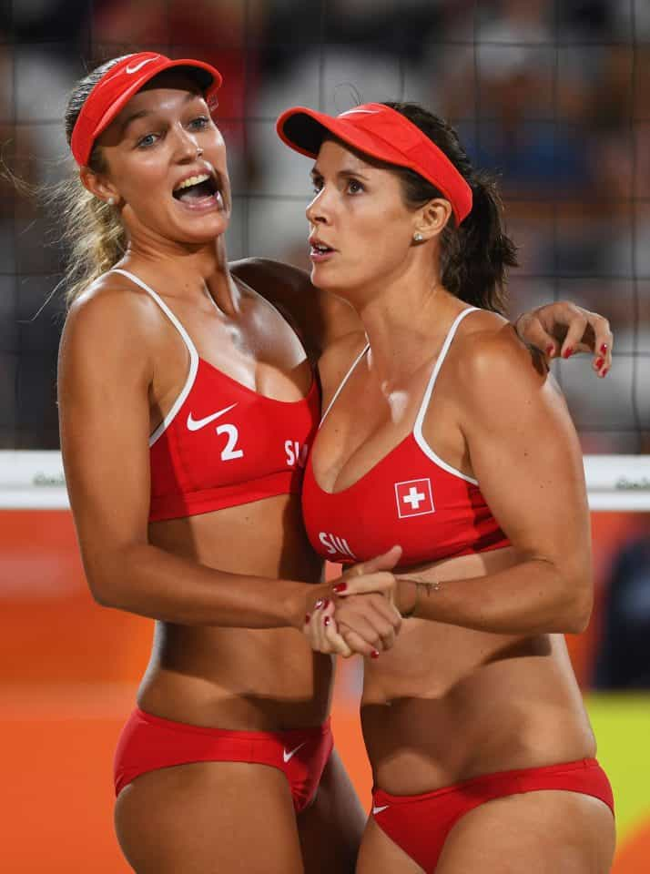
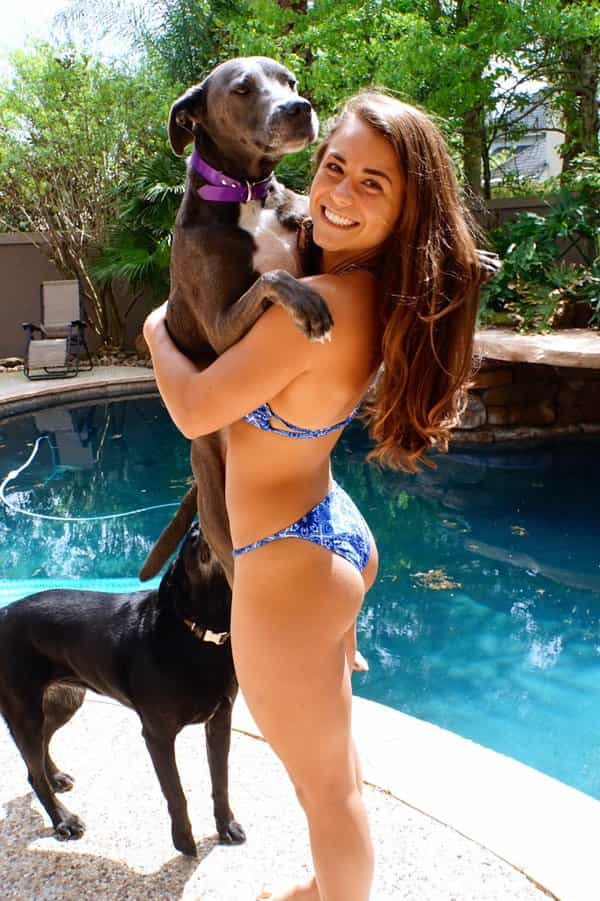
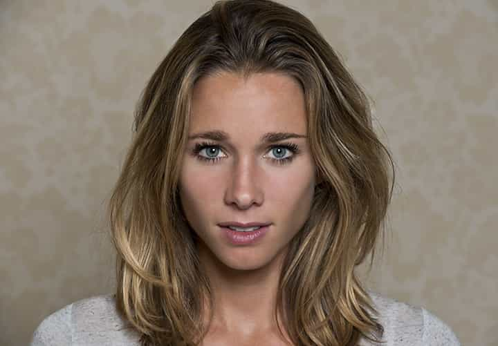
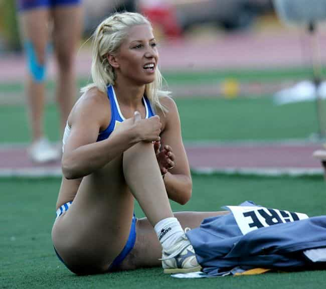
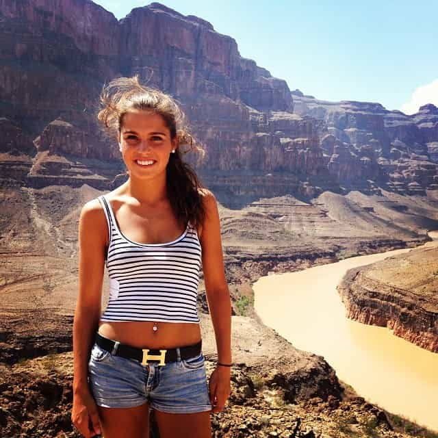

< < < Back
The 10 Hottest Girls Of The Olympics – Return Of Kings
Return Of Kings wishes to interrupt its normal program of male self-improvement, exposing criminally-inclined SJWs, and hard-hitting news to bring you the ten hottest girls of the 2016 Rio de Janeiro Olympics. Continuing its reputation as the most red pill major social media network, Reddit users have steadily compiled a sub-reddit called “The Oh-lympics.” This showcase of some of the Rio Olympic’s best female “sporting talent” promises to give male fans a much better return on their investment than actually watching women’s sports.
Although you should feel free to compile your own top ten list, here is Return Of Kings‘ for your perusal and general enlightenment:
1. Darya Klishina

Although not blessed in the mammary department, the thought of the 25-year-old blonde long-jumper would keep almost every man on the planet warm during the coldest Russian winters. Her middling international performances over the years aside (this is just her first Olympics), ROK is thankful that Klishina even got to Rio. Why? Because all her teammates on the Russian athletics team were banned from attendance due to the recent doping scandals. There must be a God if Klishina was spared in order to grace our television screens.
2. Rossella Fiamingo

The Italian fencer may have the goal of piercing her Rio rivals with an épée, but many men watching her at home would love to pierce her with something! Another 25-year-old, Rossella appears to like chilling out at beaches with her perky cleavage on display. That’s a big plus, because no man really wants to watch fencing, especially when said perky cleavage is always covered up. Sexually fertile Italian women seem to have been forgotten in recent years and this supple athlete gives us every reason to check them out again.
3. Amina Kajtaz

Bosnian wimmer Kajtaz actually competes in the butterfly, but I’m sure you’d all rather breast-stroke this 19-year-old. In addition, she’s the greatest thing ever produced by the Yugoslavian Wars. If not for these conflicts, her parents would not have had sex when they did to produce her. So thank you, militantly racist Serbian, Croatian, and Bosnian Muslim militias!
4. Shelina Zadorsky

Zadorsky, a 23-year-old Canadian, is one of the best reasons for us to take women’s football seriously. She still doesn’t push us over the line into becoming fans, but no worries. We’d just be willing to pretend we liked it for a chance to tackle on her “pitch.” No one on our writing staff will be keeping track of how many goals she scores; all that matters to us is that she scores highly in pleasing our eyes.
5. Anouk Vergé-Dépré

Pictured on the left embracing her chest-impressive partner Isabelle Forrer, 24-year-old Vergé-Dépré violates the 200-year Swiss tradition of neutrality by making us want to invade the territory below her navel. If you hadn’t wanted to experience Switzerland before, you certainly want to experience this Swiss volleyball player. Imagine her asking you to “frolic” with her on that sand?
6. Kassidy Cook

Dogs may be man’s best friends, but you would rather be 21-year-old diver Cook’s best friend with benefits. Whether or not the American wins a medal is immaterial; she’s already won gold for getting our blood to rush towards a particular place. With a buoyant ass like that, there’s no chance of her hitting the bottom of the diving pool and injuring herself. Phew.
7. Antonija Sandrić
28-year-old Sandrić should remind us that Croatia isn’t just a location for wonderful beachfront parties, yacht cruising, and Game of Thrones sets. The basketball player’s lack of head-turning height is more than made up for by her ability to get a certain part of men taller. Female basketballers, most notably Western ones, are not known for their beauty, so Sandrić is one of the biggest surprise packages on display at Rio this year.
8. Ellen Hoog

The 30-year-old Dutchwoman is definitely hot enough for American readers to accept field hockey as a sport alongside ice hockey. Winning gold with her team is likely her definition of Dutch sporting glory, but our version is waking up to her in a bed during tulip season in Amsterdam. A place at the top of a podium is deserved by any man who gets with this fine specimen.
9. Paraskevi Papachristou

Natural hair color or not, 27-year-old Papachristou rocks the dark-eyed, light hair contrast. She also provides us with a stellar opportunity to replace the disastrous Greek economic stimulus package with our own form of a stimulus package. The triple jump and long jump are two of athletics’ least popular sports, but that wouldn’t stop you from rolling around in the dirt with her for two weeks in Rio.
10. Amalie Iuel

Thank the Lord for Danish-Norwegian interbreeding. 22-year-old hurdler Iuel may represent Norway, but she can choose whichever of her two ancestral countries she wants. The only condition we insist on is that she keeps baring her skin and advertising her svelte figure. Any TV producer who cuts to commercials while she is on screen should be stoned in the same manner advocated by those extremist imams in Oslo.
Read More: The 25 Hottest Girls Of Ok Cupid Los Angeles